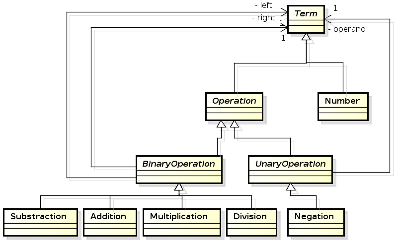
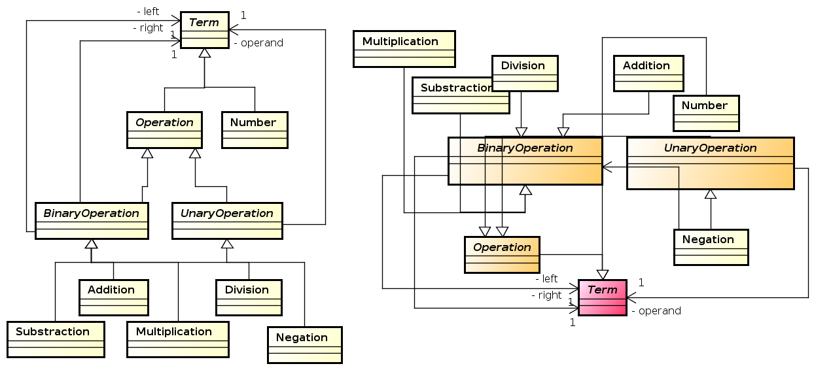
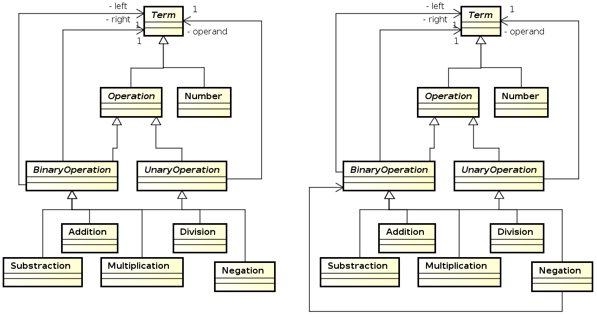
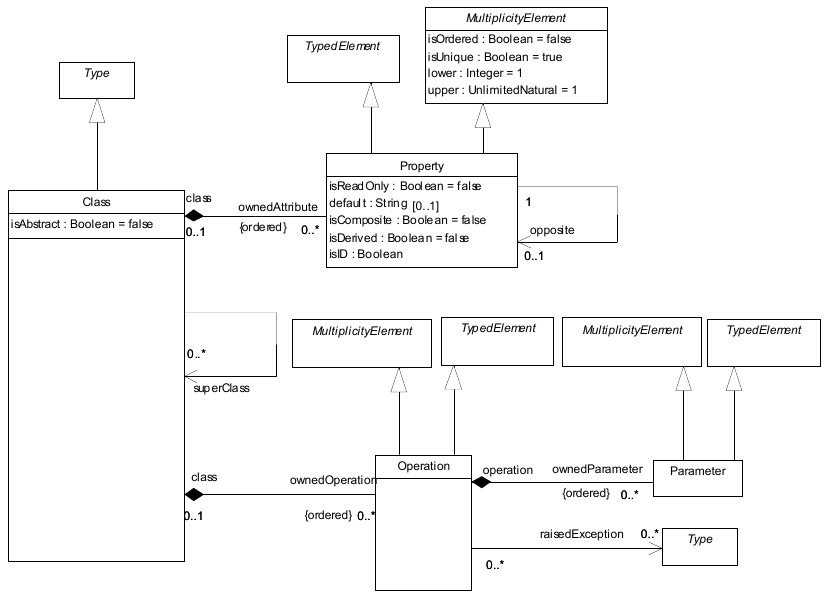
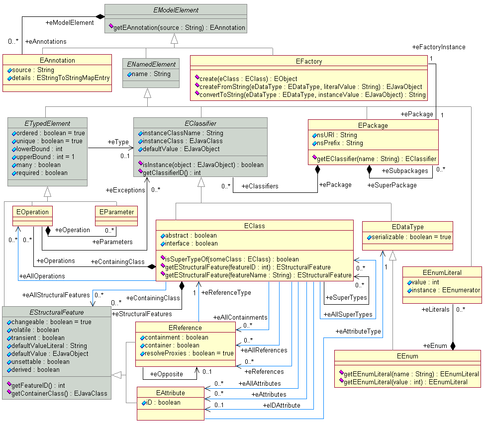

Jezici specifični za domen
Jezičke sintakse i meta-modelovanje
Prof. dr Igor Dejanović (igord at uns ac rs)
Kreirano 2020-12-04 Fri 11:15, pritisni ESC za mapu, m za meni, Ctrl+Shift+F za pretragu
Sadržaj
1 Sintakse
1.1 Tehnike i tehnologije za implementaciju DSL-ova
- Parser generatori/interpreteri
- Meta-modelovanje
- Druge tehnike: ontologije, XML tehnologije…
1.2 Konkretna sintaksa
- Da bi mogram prikazali korisniku potrebna nam je konkretna sintaksa.
- Konkretna sintaksa definiše “izgled” iskaza na nekom jeziku, odnosno u širem smislu definiše i načine interakcije korisnika sa jezičkim iskazima tj. predstavlja interfejs jezik-korisnik.
- Iako nam je za jedan jezik dovoljna jedna konkretna sintaksa, možemo ih imati više.
- Konkretne sintakse mogu biti tekstualne, grafičke, tabelarne, tipa stabla, bazirane na dijalozima …
1.3 Primer istog iskaza upotrebom dve različite konkretne sintakse

1.4 Parsiranje - sintaksna analiza
- Analiza linearnog zapisa niza simbola na osnovu pravila neke formalne gramatike jezika.
- Transformacija ulaznog stringa u stablo parsiranja.
1.5 Stablo parsiranja
- Nastaje iz niske simbola (ulaznog stringa) procesom skeniranja (tokenizacije ili leksičke analize) i parsiranja.
- Listovi stabla su tokeni prepoznati od strane skenera dok je struktura stabla određena gramatikom jezika.
- Stablo parsiranja reflektuje sintaksnu strukturu ulaznog stringa na bazi unapred definisane formalne gramatike.
1.6 Stablo parsiranja - Primer
1.7 Apstraktna sintaksa
- Određuje pravila validnosti jezičkih iskaza sa stanovišta njegove strukture bez razmatranja konkretne reprezentacije iskaza (konkretne sintakse).
- Definiše strukture validnih rečenica sa stanovišta jezika.
- Sadrži koncepte domena, njihove osobine i međusobne relacije.
- Jezici za definisanje apstraktnih sintaksi jezika se u domenu modelovanja nazivaju meta-meta-modelima*.
1.8 Primer - apstraktna sintaksa jezika za opis konačnih automata
1.9 Primer - apstraktna sintaksa jezika za jednostavne algebarske izraze

1.10 Stablo apstraktne sintakse
- Svaki iskaz na datom jeziku se može na apstraktan način opisati stablom apstraktne sintakse (Abstract Syntax Tree).
- AST je usmereno labelirano stablo gde čvorovi stabla predstavljaju instance koncepata apstraktne sintakse.
1.11 Primer stabla apstraktne sintakse
1.12 Razlike između stabla apstraktne i konkretne sintakse
- Stablo konkretne sintakse je bazirano na formalnoj gramatici koja opisuje detalje zapisa u tekstualnom obliku.
- Stablo apstraktne sintakse sadrži suštinu jezičkog iskaza.
- Možemo imati više gramatika za isti jezik odnosno jedno stablo apstraktne sintakse možemo zapisati na više različitih načina što rezultuje različitim stablima konkretne sintakse.
- Primer: Izraz
-(4-1)*5/(2+4.67)možemo u postfiksnoj notaciji zapisati kao4 1 - 5 * 2 4.67 + / -. Ovo će rezultovati različitim stablima parsiranja ali je suština izraza ista i može rezultovati istim stablom apstraktne sintakse.
2 Sekundarna sintaksa
2.1 Sekundarna sintaksa
- Iako konkretna sintaksa nameće svoja pravila, gotovo uvek postoji određena sloboda koja se ostavlja korisniku i koja omogućava da se mogram koji je isti sa stanoviša apstraktne sintakse (isto stablo apstraktne sintakse) prezentuje na različite načine.
- Primeri:
- “Prazni” karakteri kod tekstualnih sintaksi (white-spaces) najčešće nemaju semantičkog značaja pa se mogu koristiti na različite načine (kod se može nazubljivati na više načina).
- Položaji, boja i veličine simbola kod grafičkih sintaksi najčešće nemaju semantičkog značenja pa korisnik može da iskoristi ove osobine da enkoduje neko svoje značenje.
2.2 Problemi sa sekundarnom sintaksom
- Sekundarna sintaksa se može koristiti na proizvoljan način.
- Svaki korisnik razvija svoj stil upotrebe sekundarne sintakse što može prouzrokovati pogrešno ili otežano tumačenje.

Da li su ova dva mograma ista?
2.3 Problemi sa sekundarnom sintaksom

A sada?
2.4 Moguća rešenja
- Definisanje stila kodiranja - coding style (kod tekstualnih) koga se pridržavaju svi programeri. Potrebna je određena doza discipline.
- Smanjenje korisničke slobode - ugrađivanje mogućih elemenata sekundarne sintakse u formalni jezik. Alati će sprečiti neispravnu upotrebu.
2.5 Primer - Python
- Python koristi identaciju koda za kontrolu toka programa.
- Jedan od razloga čitljivosti Python koda - svi programeri moraju ispravno da nazubljuju kod.
def inner_from_python(expression):
retval = None
if isinstance(expression, types.FunctionType):
# If this expression is a parser rule
rule_name = expression.__name__
if rule_name in __rule_cache:
c_rule = __rule_cache.get(rule_name)
if self.debug:
print("Rule {} founded in cache.".format(rule_name))
if isinstance(c_rule, CrossRef):
self.__cross_refs += 1
if self.debug:
print("CrossRef usage: {}"
.format(c_rule.target_rule_name))
return c_rule
...
2.6 Pristupi u realizaciji editora za DSL-ove
Projekcione radionice - direktna izmena apstraktne reprezentacije kroz projekciju.

Bazirane na parserima - izmena se vrši posredno kroz tekst koji se parsira da bi se dobila apstraktna reprezentacija.

3 Meta-modelovanje
3.1 Model
- Modelovanje je esencijalno za ljudsku aktivnost jer svakoj akciji prethodi, eksplicitno ili implicitno, kreiranje modela.
- Modeli mogu biti deskriptivni, ukoliko modeluju postojeći realni sistem, ili preskriptivni (specifikacija) ukoliko predstavljaju “plan” sistema koji treba da se izgradi.
- Model predstavlja opis, ili specifikaciju sistema i njegovog okruženja kreiran za određenu namenu. Najčešće je model predstavljen kao kombinacija crteža i teksta. Tekst može biti zadat jezikom za modelovanje ili prirodnim jezikom*.
3.2 Model - drugi pokušaj
Model predstavlja pojednostavljenje sistema sa određenim ciljem. Model treba da odgovori na pitanja umesto stvarnog sistema. Odgovori dobijeni od modela moraju da budu isti kao i oni dobijeni od realnog sistema, pod uslovom da se pitanja nalaze u domenu definisanom ciljem modela. Da bi bio koristan, model mora biti jednostavniji za upotrebu od realnog sistema. Da bi se ovo postiglo, mnogi detalji realnog sistema su apstrahovani i izostavljeni. Ovo pojednostavljenje je srž modelovanja.
3.3 Osnovne karakteristike modela
- Model ne predstavljaju samo crteži i tekstualni opisi. Model može imati materijalnu formu npr. može biti model/maketa aviona, pojednostavljena verzija motora sa unutrašnjim sagorevanjem itd.
- Apstrakcija i namena, tj. skup pitanja na koje želimo da dobijemo odgovore, su osnovne karakteristike modela.
- U opštem slučaju, ne možemo očekivati da će model dati potpuno iste odgovore kao modelovani sistem ali možemo očekivati da razlike (greške) budu u projektovanim granicama.
3.4 Meta-model
- Kada kreiramo model sistema moramo poštovati određena pravila odnosno moramo koristiti određeni jezik za modelovanje.
- Jezik može biti opšte namene (npr. UML) ili specifičan za domen.
- Takav jezik predstavlja eksplicitnu specifikaciju korišćene apstrakcije pri modelovanju*.
- Apstraktna sintaksa datog jezika u svetu modelovanja je takođe predstavljena kao model. Ovakav model nazivamo meta-modelom.
- Meta-model sadrži koncepte domena, njihove međusobne veze i ograničenja.
3.5 Primer - meta-model jezika za opis konačnih automata
Apstraktna sintaksa je meta-model
3.6 Operacije koje koristimo pri (meta)modelovanju
- Apstrakcija
- Klasifikacija
- Generalizacija
3.7 Apstrakcija
- Jedno od osnovnih oruđa ljudskog intelekta.
- Proces zanemarivanja nebitnih informacija prilikom kreiranja modela.
3.8 Apstrakcija
If you assume a certain basic knowledge in the audience, you can talk in a language that deals with bigger concepts, and express things in a much shorter and clearer way. This, more or less, is what abstraction is.
3.9 Klasifikacija
- Objekti realnih sistema, kao i njihovi modeli, se mogu grupisati na osnovu zajedničkih osobina.
3.10 Token modeli i modeli tipova
- Prvi ih je definisao Čarls Sanders Pirs.
- Token modeli:
- Modeli konkretnih pojedinačnih pojava realnog sveta.
- Nastaju isključivo procesom apstrakcije.
- Primer: geografska mapa, maketa aviona…
- Modeli tipova:
- Nastaju procesom klasifikacije modela tokena na osnovu zajedničkih osobina.
- Ovakav model opisuje klasu pojava realnog sveta.
3.11 Generalizacija
- Predstavlja dalji proces klasifikacije modela tipova na osnovu zajedničkih osobina.
- Odvija se unutar modela tipova na taj način što se tipovi grupišu u apstraktne koncepte na osnovu zajedničkih osobina. Za tako kreirane koncepte kažemo da generalizuju posmatrani skup koncepata, odnosno posmatrani skup koncepata se nasleđuje iz generalizovanog koncepta.
4 Meta-metamodeli
4.1 Meta-metamodel
- Kreiranje jezika predstavlja domen sa svojim konceptima i pravilima.
- Jezik ovog domena (jezik za opis jezika) nazivamo meta-jezikom.
- Kao što apstraktnu sintaksu bilo kog jezika nazivamo meta-modelom, apstraknu sintaksu meta-jezika nazivamo meta-metamodelom.
- Meta-metamodelom možemo opisati apstraktnu sintaksu bilo kog jezika pa i meta-jezika. Stoga kažemo da je meta-metamodel samodefinišući.
4.2 MOF
- MOF (Meta-Object Facility)1 je meta-metamodel i industrijski standard koji se razvija pod okriljem OMG (Object Management Group) konzorcijuma.
- Predstavlja osnovnu integracionu platformu MDA (Model-Driven Architecture) pravca i omogućava interoperabilnost UML baziranih alata.
- Nastao je na bazi UML-a i u MOF-u se danas opisuju OMG jezici za modelovanje, između ostalog i UML
- MOF je podeljen na EMOF (Essential MOF), CMOF(Complete MOF) i SMOF(Semantic MOF).
4.3 EMOF

4.4 ECore
- ECore je meta-metamodel čiji je razvoj započeo IBM a kasnije je razvijan u okviru Eclipse EMF (Eclipse Modeling Framework)1 projekta.
- Baziran na programskom jeziku Java. Pod licencom slobodnog softvera (Eclipse Public License).
- U osnovi predstavlja efikasnu implementaciju EMOF meta-metamodela.
- Industrijski standard, dokazan i testiran kroz višegodišnju upotrebu na realnim projektima.
4.5 ECore

4.6 GOPPRR
- Ime predstavlja skraćenicu reči koje opisuju osnovne koncepte jezika: G raph, O bject, P roperty, P ort, R ole, R elationship.
- Vlasnički softver. Okosnica MetaEdit+ alata1. Nastao je od ranijih verzija koje su nosile naziv GOPRR i OPRR2.
4.7 MoRP
- Razvijen na Katedri za informatiku.
- Jednostavan - mali broj koncepata.
- Implementacija u Javi1. U toku port na Python2 (čim se nađe vremena ;) ).
5 Stek za metamodelovanje
5.1 Stek za metamodelovanje
5.2 Primer - Mogram, jezik, meta-jezik